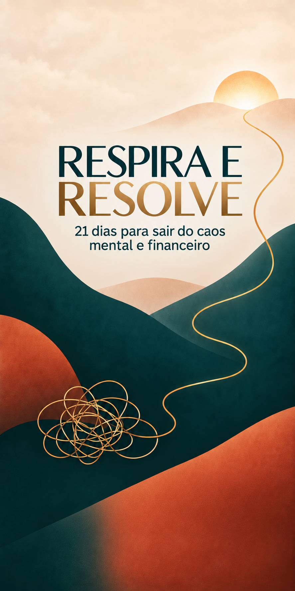

A cabeça não desliga
Você deita cansada, mas os pensamentos continuam trabalhando horas extras.
Uma mudança de rota começa aqui
Uma jornada guiada de 21 dias para acalmar a mente, romper crenças limitantes e fazer pequenos movimentos capazes de mudar a direção da sua vida emocional e financeira.
Acesso digital • Poucos minutos por dia • Faça no seu ritmo

Quando tudo pesa
Quando a mente vive em alerta, até uma decisão pequena parece enorme. O primeiro passo não é correr mais: é criar espaço para enxergar.
Você deita cansada, mas os pensamentos continuam trabalhando horas extras.
Você evita olhar porque sente que encarar os números só aumentará a angústia.
Você passa o dia apagando incêndios e termina com a sensação de não ter avançado.
Você adia, se cobra, tenta recomeçar e acaba voltando ao mesmo ponto.
A proposta
Um pequeno movimento pode parecer pouco hoje. Repetido todos os dias, ele muda a rota — e pode levar você a um destino completamente diferente.

Áudios de meditação guiada ajudam você a desacelerar, sair do piloto automático e recuperar presença antes de tomar decisões.
Reflexões e práticas ajudam a identificar crenças limitantes relacionadas a medo, incapacidade, merecimento e escassez.
Cada dia propõe um exercício prático para tirar a mudança do pensamento e colocá-la na vida real.
Você organiza prioridades e finanças com passos possíveis, criando uma rotina que não depende de perfeição.
Você não precisa controlar o mar inteiro. Precisa assumir o leme da sua própria vida.
O caminho dos 21 dias
Sem tentar mudar tudo de uma vez. A jornada evolui com você, passo após passo.

Reduza o ruído interno e reconheça o que está pedindo sua atenção.

Olhe para sua realidade sem julgamento e transforme preocupação em plano.

Crie acordos consigo mesma e siga sem depender de motivação perfeita.
Tudo que acompanha você
Você não fica sozinha diante de uma tela pensando “tá, mas o que eu faço agora?”. Cada material existe para conduzir o próximo movimento.


Para acalmar a mente, reduzir a ansiedade do momento e recuperar clareza.
Uma ação por dia para transformar intenção em movimento concreto.
Práticas para perceber e começar a romper pensamentos de medo e escassez.
Recursos para organizar pensamentos, escolhas, prioridades e dinheiro.
Uma rotina simples para manter a nova direção depois dos 21 dias.
Uma conversa honesta
O programa não promete enriquecer em 21 dias nem eliminar todos os problemas. Ele oferece um ponto de partida seguro para sair da paralisia, organizar o que está ao seu alcance e mudar a rota com movimentos pequenos e consistentes.
Dúvidas frequentes
Tudo o que você precisa saber para começar com tranquilidade.
Não. O programa começa pelo básico e usa linguagem simples, focada em decisões da vida real.
A proposta é ouvir uma orientação e realizar uma prática curta. O importante é a constância, não a perfeição.
Os áudios acompanham diferentes momentos da jornada: acalmar a mente, voltar ao presente e trabalhar crenças que influenciam suas escolhas.
Você continua no dia seguinte, sem culpa. A jornada deve servir à sua vida — não virar mais uma cobrança.
Não. É um programa educativo de organização pessoal e financeira. Ele não substitui acompanhamento psicológico, médico, contábil ou financeiro individual.
Após a confirmação, você receberá as orientações de acesso ao conteúdo digital pelo e-mail cadastrado na compra.
Sua nova rota pode começar hoje
Em 21 dias, talvez o mar ainda não esteja calmo. Mas você pode estar mais consciente, mais organizada e novamente com as mãos no leme.